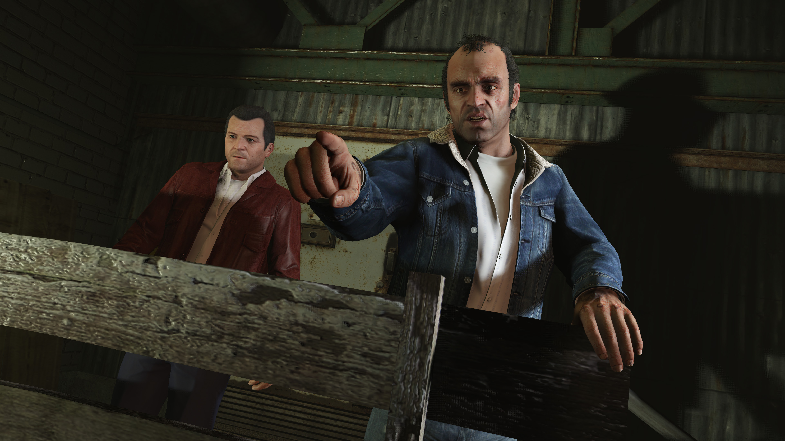
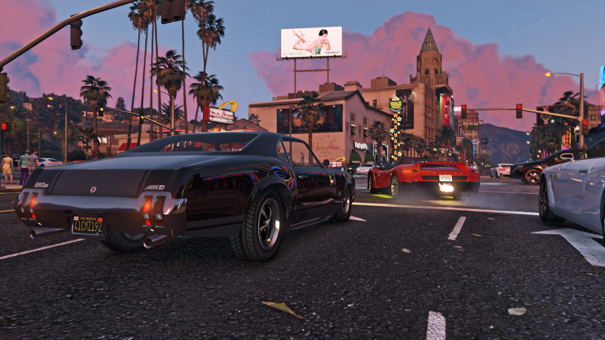
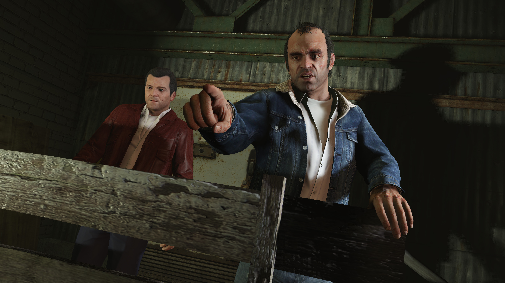
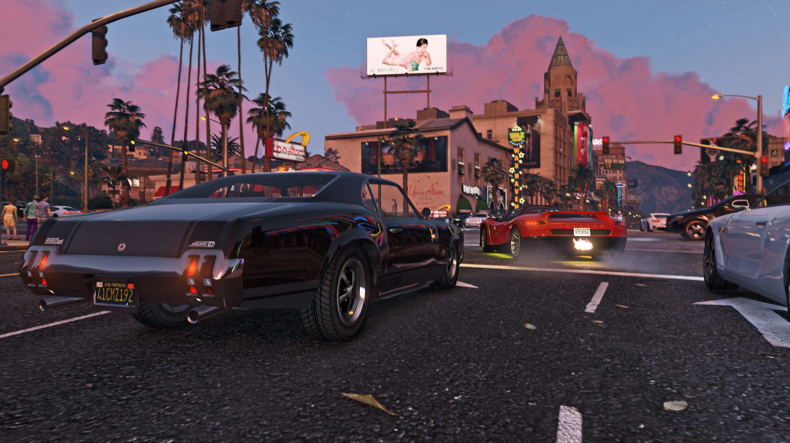

Grand Theft Auto V
When a young street hustler, a retired bank robber, and a terrifying psychopath find themselves entangled with some of the most frightening and deranged elements of the criminal underworld, the U.S. government, and the entertainment industry, they must pull off a series of dangerous heists to survive in a ruthless city in which they can trust nobody — least of all each other.
- Rating: ****
- Multiplayer
- Online PvP
- Genre: Open-world action
- Ontwikkelaar: Rockstar Games
- Uitgavedatum: 17 september 2013
 



Systeemeisen
- Besturingsysteem: Windows 10 64 Bit
- Processor: Intel Core 2 Quad CPU Q6600 @ 2.40GHz (4 CPUs) / AMD Phenom 9850 Quad-Core Processor (4 CPUs) @ 2.5GHz
- Geheugen: 4 GB RAM
- Grafische kaart: NVIDIA 9800 GT 1GB / AMD HD 4870 1GB (DX 10, 10.1, 11)
- Direct X: 100% DirectX 10 compatible
- Opslagruimte: 120 GB available space
Recenties
"If GTA V on PC is a bit late, it can easily be forgiven. Because the content is already awesome and it's technically stunning. It feels like a new Los Santos. There is no open world game that can match that. And the Rockstar Editor offers such an easy access and so many possibilities in terms of clips/movies creation that we can only be sure that the pleasure will last for a long, long time." - Gameblog.fr
"Grand Theft Auto V finally hits PC after over a year of waiting. While the wait was hard it was completely worth it given the final product on display. Improved graphics are just the beginning as the game becomes an entirely new experience on PC." - Attack of the Fanboy
"GTA V represents videogames at their finest. Tense and dramatic when it wants to be, joyful and surprising when the player wants it. Rockstar has managed to harmonize the different trends in the saga, managing to create an unforgettable experience that will be enjoyed for a long time to come. This new version comes with some interesting additions: FPS mode, better graphics, 60 FPS, 2 new radios and the Rockstar Editor." - Meristation